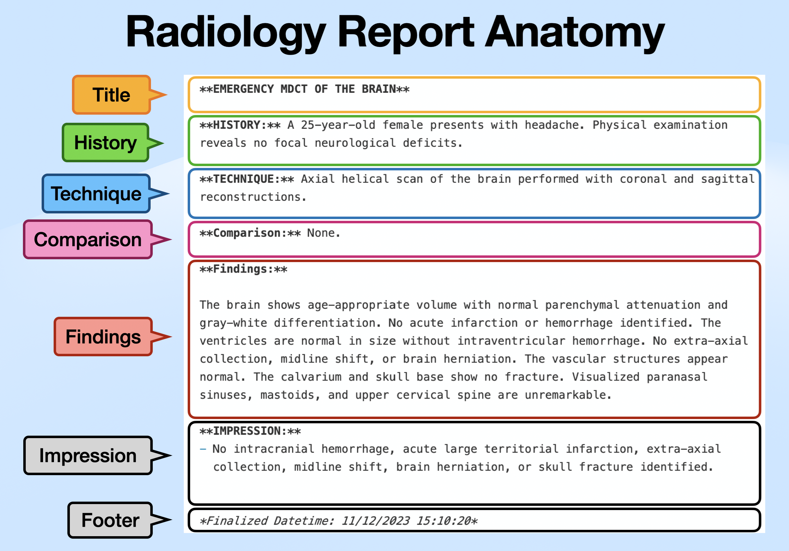

Understanding the structure of radiology reports is essential for effective text extraction. This section explains how radreportparser models and processes radiology report text.
Report Structure
A radiology report typically consists of several distinct sections, each serving a specific purpose in communicating the radiological findings. radreportparser uses a section-based parsing approach, where:
Each section is identified by a section keyword (e.g., “HISTORY:”, “FINDINGS:”)
Section content extends from its keyword until the next section keyword
Sections are non-overlapping and sequential
The typical section of radiology report 1 follows the structure in Figure 1:

Figure 1: Radiology Report Anatomy
Note
Section order can vary between institutions and report types. radreportparser is designed to handle flexible section ordering.
Radiology Report Data Model
radreportparser uses the RadReport dataclass to represent structured report data. This class provides:
Type-safe section storage
Easy access to individual sections
Conversion to standard data formats
Here’s an example of working with the RadReport class:
from radreportparser import RadReport# Create a RadReport instancereport = RadReport( title="EMERGENCY MDCT OF THE BRAIN", history="A 25-year-old female presents with headache...", technique="Axial helical scan of the brain...", findings="The brain shows age-appropriate volume...", impression="No intracranial hemorrhage...")# Display the report objectreport
RadReport(title='EMERGENCY MDCT OF THE BRAIN', history='A 25-year-old female presents with headache...', technique='Axial helical scan of the brain...', comparison=None, findings='The brain shows age-appropriate volume...', impression='No intracranial hemorrhage...')
Each section can be accessed as an attribute:
report.title
'EMERGENCY MDCT OF THE BRAIN'
# Sections that weren't specified return Nonetype(report.comparison)
NoneType
The RadReport class supports serialization to both Python dictionaries and JSON format:
Convert to python dictonary:
report.to_dict()
{'title': 'EMERGENCY MDCT OF THE BRAIN',
'history': 'A 25-year-old female presents with headache...',
'technique': 'Axial helical scan of the brain...',
'comparison': None,
'findings': 'The brain shows age-appropriate volume...',
'impression': 'No intracranial hemorrhage...'}
Convert to JSON object:
print(report.to_json(indent =2))
{
"title": "EMERGENCY MDCT OF THE BRAIN",
"history": "A 25-year-old female presents with headache...",
"technique": "Axial helical scan of the brain...",
"comparison": null,
"findings": "The brain shows age-appropriate volume...",
"impression": "No intracranial hemorrhage..."
}
Tip
Use to_dict(exclude_none=True) or to_json(exclude_none=True) to omit empty sections from the output.
Extract Report
The RadReportExtractor class provides high-level methods for extracting structured sections from radiology report text. Let’s walk through the extraction process using a sample report:
# Sample brain CT report (with markdown formatting)report_text ="""EMERGENCY MDCT OF THE BRAIN**HISTORY:** A 25-year-old female presents with headache. Physical examination reveals no focal neurological deficits.TECHNIQUE: Axial helical scan of the brain performed with coronal and sagittal reconstructions.*Comparison:* None.Findings:The brain shows age-appropriate volume with normal parenchymal attenuation and gray-white differentiation. No acute infarction or hemorrhage identified. The ventricles are normal in size without intraventricular hemorrhage. No extra-axial collection, midline shift, or brain herniation. The vascular structures appear normal. The calvarium and skull base show no fracture. Visualized paranasal sinuses, mastoids, and upper cervical spine are unremarkable.=== IMPRESSION ===- No intracranial hemorrhage, acute large territorial infarction, extra-axial collection, midline shift, brain herniation, or skull fracture identified."""
Initializing the Extractor
Before extracting sections, we need to initialize a RadReportExtractor() instance:
from radreportparser import RadReportExtractor, is_re2_available# Initialize extractor with default configuration using build-in `re` moduleextractor = RadReportExtractor()
Alternatively, you can use the Google re2 module (must be installed separately) for faster regex processing by specifying the backend parameter:
if is_re2_available(): extractor2 = RadReportExtractor(backend="re2")
The RadReportExtractor() uses section keywords to identify the start of each section. These keywords are defined as regular expressions and can be customized during initialization using the keys_* parameters.
The default keywords are defined in the KeyWord enum:
from radreportparser import KeyWord# Example: inspect default keywords for the history sectionKeyWord.HISTORY.value
The extract_all() method provides a convenient way to extract all sections at once. It returns a RadReport instance containing the structured data:
# Extract all sections from the reportreport = extractor.extract_all(report_text)report
RadReport(title='EMERGENCY MDCT OF THE BRAIN', history='A 25-year-old female presents with headache. Physical examination reveals no focal neurological deficits.', technique='Axial helical scan of the brain performed with coronal and sagittal reconstructions.', comparison='None.', findings='The brain shows age-appropriate volume with normal parenchymal attenuation and gray-white differentiation. No acute infarction or hemorrhage identified. The ventricles are normal in size without intraventricular hemorrhage. No extra-axial collection, midline shift, or brain herniation. The vascular structures appear normal. The calvarium and skull base show no fracture. Visualized paranasal sinuses, mastoids, and upper cervical spine are unremarkable.', impression='- No intracranial hemorrhage, acute large territorial infarction, extra-axial collection, midline shift, brain herniation, or skull fracture identified.')
# Using `re2` backendif is_re2_available():print(extractor2.extract_all(report_text))
The extracted sections can be accessed individually:
# Access specific sectionsprint("Title:", report.title)print("\nHistory:", report.history)
Title: EMERGENCY MDCT OF THE BRAIN
History: A 25-year-old female presents with headache. Physical examination reveals no focal neurological deficits.
The RadReport instance can be easily converted to standard data formats:
# Convert to Python dictionaryreport.to_dict()
{'title': 'EMERGENCY MDCT OF THE BRAIN',
'history': 'A 25-year-old female presents with headache. Physical examination reveals no focal neurological deficits.',
'technique': 'Axial helical scan of the brain performed with coronal and sagittal reconstructions.',
'comparison': 'None.',
'findings': 'The brain shows age-appropriate volume with normal parenchymal attenuation and gray-white differentiation. No acute infarction or hemorrhage identified. The ventricles are normal in size without intraventricular hemorrhage. No extra-axial collection, midline shift, or brain herniation. The vascular structures appear normal. The calvarium and skull base show no fracture. Visualized paranasal sinuses, mastoids, and upper cervical spine are unremarkable.',
'impression': '- No intracranial hemorrhage, acute large territorial infarction, extra-axial collection, midline shift, brain herniation, or skull fracture identified.'}
# Convert to JSON (pretty-printed)print(report.to_json(indent =2))
{
"title": "EMERGENCY MDCT OF THE BRAIN",
"history": "A 25-year-old female presents with headache. Physical examination reveals no focal neurological deficits.",
"technique": "Axial helical scan of the brain performed with coronal and sagittal reconstructions.",
"comparison": "None.",
"findings": "The brain shows age-appropriate volume with normal parenchymal attenuation and gray-white differentiation. No acute infarction or hemorrhage identified. The ventricles are normal in size without intraventricular hemorrhage. No extra-axial collection, midline shift, or brain herniation. The vascular structures appear normal. The calvarium and skull base show no fracture. Visualized paranasal sinuses, mastoids, and upper cervical spine are unremarkable.",
"impression": "- No intracranial hemorrhage, acute large territorial infarction, extra-axial collection, midline shift, brain herniation, or skull fracture identified."
}
Tip
The extract_all() method accepts these parameters:
include_key: Whether to include section keywords in output (default: False)
word_boundary: Whether to use word boundaries in pattern matching (default: False)
Extract Individual Section
You can also extract specific sections using individual methods like extract_history(), extract_findings(), etc. These methods provide more control over extraction parameters.
For example, to extract just the history section:
# Include section keyword (default)extractor.extract_history(report_text)
'**HISTORY:** A 25-year-old female presents with headache. Physical examination reveals no focal neurological deficits.'
Keyword Inclusion
You can control whether the section keyword is included in the output using the include_key parameter.
'HISTORY: Patient with cough 2 days ago\nIMPRESSION: Unremarkable'
Since the keywords for “KeyWord.FINDINGS” comes before that of KeyWord.IMPRESSION, the end of “history” section would terminate just before the “KeyWord.FINDINGS” matched.
Manually Configure Section Keywords
You can customize the RadReportExtractor() to match different report formats by providing your own section keywords. This is particularly useful when working with institution-specific report templates.
Here’s an example using a chest radiograph report format:
# Sample chest X-ray reportchest_xray_text ="""CHEST RADIOGRAPHCLINICAL INFORMATION: 65-year-old with productive coughPROCEDURE: PA and lateral chest radiographDESCRIPTION:- Clear lung fields bilaterally- Normal cardiac silhouette- No pleural effusionCONCLUSION:1. Normal chest radiograph"""# Custom section keywords for chest X-ray reportsextractor_custom = RadReportExtractor( keys_history=["CLINICAL INFORMATION:", "INDICATION:"], keys_technique=["PROCEDURE:", "EXAMINATION:"], keys_findings=["FINDINGS:", "DESCRIPTION:"], keys_impression=["CONCLUSION:", "IMPRESSION:"])# Extract sections using custom configurationchest_report = extractor_custom.extract_all(chest_xray_text)chest_report
RadReport(title='CHEST RADIOGRAPH', history='65-year-old with productive cough', technique='PA and lateral chest radiograph', comparison='', findings='- Clear lung fields bilaterally\n- Normal cardiac silhouette\n- No pleural effusion', impression='1. Normal chest radiograph')
chest_report.history
'65-year-old with productive cough'
chest_report.impression
'1. Normal chest radiograph'
Tip
When configuring custom keywords:
Use variations of section headers commonly seen in your reports
Order keywords from most to least specific for better matching
Remember that matching is case-insensitive by default
Change Regular Expression Backend
Extract Section
While the RadReportExtractor()class is designed specifically for radiology reports, radreportparser also provides a more generic text extraction functionality through the SectionExtractor class, which can extract text sections from any document using custom start and end markers.
Basic Usage
The SectionExtractor class requires:
start_keys: A list of possible starting keywords, each one represented by Python regular expression.
end_keys: A list of possible ending keywords (exclusive), each one represented by Python regular expression.
The SectionExtractor extract text from the start_keys and unitil (but not include) the end_keys.
Here’s a simple example with a radiology report:
from radreportparser import SectionExtractor# Sample radiology textrad_text ="""FINDINGS: Normal chest CTIMPRESSION: No acute abnormality"""# Create extractor for findings sectionfindings_extractor = SectionExtractor( start_keys=["FINDINGS:"], end_keys=["IMPRESSION:"])# Extract findingsfindings = findings_extractor.extract(rad_text)print(findings)
FINDINGS: Normal chest CT
Flexible Text Extraction
The class’s flexibility makes it useful for parsing various medical documents. Here is an example for pathology report
path_text ="""**SPECIMEN:** Right breast core biopsy**GROSS DESCRIPTION:** Three cores of tan-white tissue**MICROSCOPIC EXAMINATION:** - The specimen shows normal breast tissue with fibrous stroma== DIAGNOSIS ==- Benign breast tissue- No evidence of malignancy"""# Create extractor for microscopic examinationmicro_extractor = SectionExtractor( start_keys=[r"(:?\W*)MICROSCOPIC EXAMINATION(:?\W*)"], end_keys=[r"(:?\W*)DIAGNOSIS(:?\W*)"], include_start_keys =False)# Extract microscopic sectionmicro = micro_extractor.extract(path_text)print(micro)
The specimen shows normal breast tissue with fibrous stroma
extract_all() method can be used to extract one or more sections that any of start_keys matches.
conversation_text ="""Human: HiAI: Hello, How can I help you?Human:- What is 1+1- Think step-by-stepAI: 1 + 1 = 2Answer: 2"""human_section_extractor = SectionExtractor( start_keys=["human:"], end_keys=["AI:"], include_start_keys =False)# Extract all section that match `start_keys`human_section_extractor.extract_all(conversation_text)
['Hi', '- What is 1+1\n- Think step-by-step']
Advanced Features
Multiple Start/End Keys
You can provide multiple possible section markers:
text ="""FINDING NormalIMPRESSION Abnormal"""# Without word boundariesextractor_no_boundary = SectionExtractor( start_keys=["FINDING"], end_keys=["IMP"], word_boundary=False)extractor_no_boundary.extract(text)
'FINDING Normal'
# With word boundariesextractor_with_boundary = SectionExtractor( start_keys=["FINDING"], end_keys=["IMP"], word_boundary=True)# No match for `end_keys` extractor_with_boundary.extract(text)
'FINDING Normal\nIMPRESSION Abnormal'
Match Strategy Control
Choose between ‘greedy’ and ‘sequential’ matching:
text ="""OBSERVATION: None FINDING: UnremarkableASSESSMENT: StableNOTES: Continue monitoring"""
Greedy matching (default):
Section ends by matching any of the start_keys or end_keys